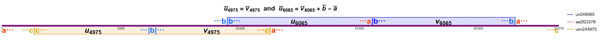
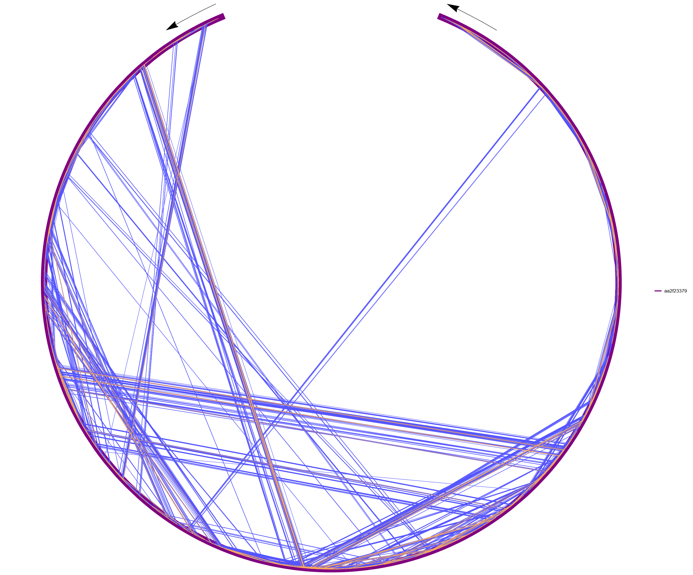

Near misses inside aa2f23379 - uxv patterns, where u and v are commutatively equivalent and x is in {a,b,c}, and uv patterns, where u and v differ only by one letter
The problem whether there is an infinite word avoiding abelian squares of period more than 1 over the ternary alphabet is still open. Originally, this so-called aa2f problem on three letters was posed by Sami Mäkelä in his M.Sc. Thesis, Patterns in words (in Finnish), University of Turku, 2002.
Experimentally, a long aa2f word of length 25379 was found with the aid of a parallelized Rust program written by Alexandr Gavrilenko in 2017.
Here we consider the word aa2f23379 of length 23379, obtained by taking the middle part of the longer aa2f25379 word, cutting away the first and last 1000 characters. It turns out that this word is very fragile in the sense that it is full of so-called uv and uxv factors (near misses) where changing a single letter would destroy the desired characteristic of the entire word. Below we present the situation visually.
The longest uxv and uv patterns within the word aa2f23379 are located as follows:

Below you can see all the fragile uv and uxv structures (near misses) of aa2f23379, similar to those described above, with a total length ranging from 202 to 12130.
The purple arc of the circle depicts the word aa2f23379, the blue chords represent the factors uv, and the orange chords represent the factors uxv. The chords themselves have no other meaning than to help us see the beginning and end of a delicate structure on the arc of a circle, i.e. inside the word aa2f23379.

© 2026 V. Keränen
May 22, 2026
Permission to use, copy, and distribute the material above for any non-commercial purpose is hereby granted without a separate permission, provided that the source is mentioned.